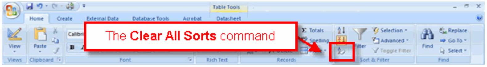
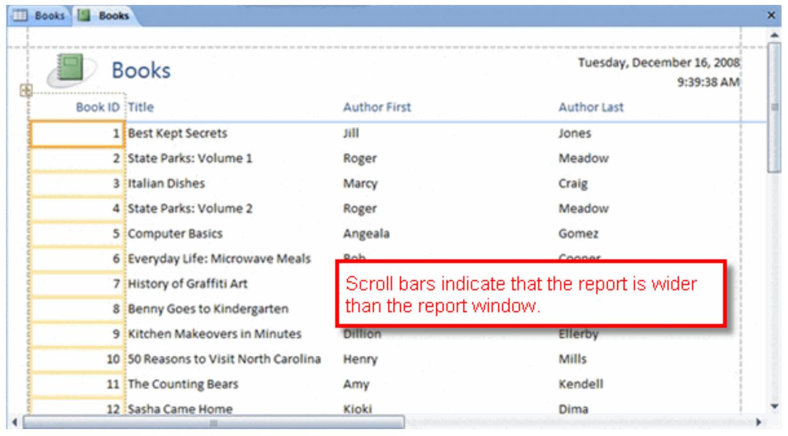

Analyzing and Reporting Data
Sorting Records
Introduction

Once a database is populated, it's time to think about how to look at—or analyze—the data. One basic way to analyze data is to sort it. Sorting data is easy with Access 2007. In this lesson, we'll show you how to sort text-based and numerical data using common sorting commands, as well as how to clear sorts.
Sorting on text values
When Access 2007 sorts on a text value, it offers two options:
| Sort Option | Also Called | Description |
|---|---|---|
| A to Z | Ascending | Values closest to A are displayed first |
| Z to A | Descending | Values closest to Z are displayed first |
To sort based on a text value, click the drop-down arrow at the top of the field you want to sort and select an option.

Sorting on numerical values
Access 2007 also offers two options when sorting based on a numerical value:
| Sort Option | Also Called | Description |
|---|---|---|
| Smallest to Largest | Ascending | Values closest to 1 are displayed first |
| Largest to Smallest | Descending | Values farthest from 1 are displayed first |
To clear a sort, click the Clear All Sorts command in the Sort & Filter group on the Ribbon.
Filtering Records
Introduction

Another useful way to look at data is by filtering it. Filtering groups your data together based on one or more criteria, then displays only the records that meet those criteria. In this lesson, we'll show you how to filter records using common filter commands.
Filtering by field
When you Filter by Field, Access 2007 finds all of the values that have been entered in the specified field and lets you choose which value or values to display.
- In the Sort & Filter group on the Ribbon, click the Filter command.
- When the dialog box appears, select the value you want to use as the filter value.
- Click OK.

You can switch between filtered and unfiltered results by clicking the Toggle Filter button on the Ribbon.
Filtering by selection
When you Filter by Selection, Access returns results based on the value in the cell you have currently selected.
- Place your cursor in the cell that contains the value you want to use as your filter.
- Click the Selection command in the Sort & Filter group on the Ribbon.
- Choose one of the options: Equals, Does Not Equal, Contains, or Does Not Contain.

Using advanced filters
An Advanced Filter can help you further narrow your records, similar to running a small query on a single table. You can set multiple criteria and sort orders for various fields.

Using Queries to Make Data Meaningful
Part 1: Basic Queries
The real power of an Access database lies in its ability to pull data for quick analysis, which is what happens when you run a query. Queries allow you to retrieve information from one or more tables based on a set of search conditions you define.
Planning a query
There are three questions you need to answer when planning a query:
- What do you want the results to look like? (Identify fields)
- Where is the information stored in the database? (List tables)
- What conditions do you want the data to meet? (Set criteria)
Using the Query Design command
Once you've planned out your query, you can build it using the Query Design command on the Create tab.
- Use the Show Table dialog box to select tables.
- Drag and drop the fields you want to see in your results to the bottom portion of the query design screen.
- Enter your condition in the Criteria row for the appropriate field.
- Click Run! in the Results group on the Ribbon to see your results.


Part 2: Queries with Totals
Sometimes you may want to see your query results grouped or counted. Access offers several options using the Totals command, including Sum, Average, Maximum, Minimum, and Count.
Using Count and Group By functions in a query
When you use the Totals command in a query, Access will automatically group every field by the values in each field. This means it will look for repeating values and group like values together.
- Click Totals in the Show/Hide group on the Ribbon. A "Total" row will appear in the design grid.
- Click in the Totals row for the field you want to count (e.g., Book ID). From the drop-down list, select Count.
- For all other fields, the Total row will default to Group By.
- Click Run! to see your results, which will now show a count for the specified field.

| Title | Author First | Author Last | Category | Price | CountOfBookID |
|---|---|---|---|---|---|
| 30 Reasons to Visit North Carolina | Henry | Mills | Travel | $14.99 | 1 |
| Baby's First Steps | Felicia | Nova | Non-Fiction | $14.99 | 5 |
| Benny Goes to Kindergarten | Naomi | Harris | Kids | $8.00 | 1 |
| Best Kept Secrets | Jill | Jones | Fiction | $16.00 | 2 |
| Computer Basics | Angeala | Gomez | Technology | $17.00 | 3 |
Using Reports to Make Data Meaningful to Others
Introduction

Now that you know how to use queries to analyze data, it's time to create a report that will make the data meaningful to someone else. A report is an effective way to present your data using an attractive layout.
Creating a report
The easiest way to create a report is by using the Report command on the Create tab. You can use either a table or a query as the source for your report.

The report is automatically generated and includes every field from the source table or query.
Grouping items on a report
Grouping items on a report can make it much more readable. To add grouping, select the Group & Sort command from the Format tab on the Ribbon. This opens a dialog box at the bottom where you can select a field to group by.

Formatting a report in Layout view
Access opens the created report in Layout view so you can easily make modifications. You can change the look of your report by:
- Deleting, moving, and resizing columns.
- Adding a logo and changing the title.
- Applying a report style with AutoFormat.
- Modifying the page layout (margins, orientation) in Print Preview.